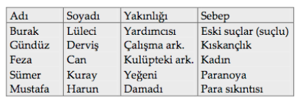

MANTIK BİLMECESİ
Bir iş adamı öldürülmüştü. Bu cinayetle ilgili olarak beş şüpheli sorguya çekildi ve sonunda birisi mahkemeye verildi. Aşağıdaki ipuçlarına dayanarak bu soruşturmadaki sonuçları bulunuz. Suçlu kimdir?
İpuçları
1. Araştırma sırasında çalışma arkadaşının öldürülen iş adamını ileri derecede kıskandığı ortaya çıktı.
2. Harun’un ilk adı öldürülen iş adamının yeğenininkinden daha uzundu.
3. Sümer Kuray şüphelilerin başında geliyordu.
4. Yapılan araştırmalar sonucunda Mustafa’nın parasal problemleri olduğu ortaya çıktı ve iş adamının ortadan kaldırılması ona bir rahatlık getirecekti. Fakat araştırma sonunda adı temize çıktı.
5. Can, iş adamı ile aynı kulüpte üyeydi.
6. Öldürülen iş adamının yardımcısı olan Burak’ın iş adamını öldürmek için kuvvetli nedenleri vardı.
7. Ne Feza, ne de Derviş öldürülen iş adamının damadıydılar, ne de iş adamı tarafından takip edildiklerini sanıyorlardı, fakat sonunda bunların üçü de cinayette suçlu bulunmadı.
8. Öldürülen iş adamının kâğıtları tetkik edildiğinde kendisi ile hiçbir kan ya da evlilik ilişkisi olmayan Lüleci’nin eskiye ait bazı kriminal suçları olduğu ortaya çıktı.
Cevap:
